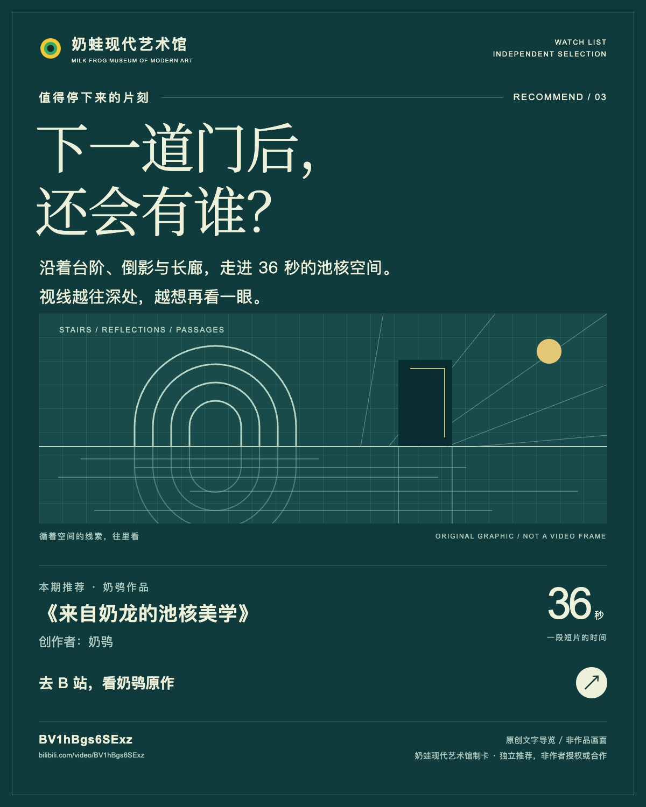

去奶龙的泳池里走一圈
跟着瓷砖、台阶和水面往里走。奶鸮《来自奶龙的池核美学》的好看，藏在熟悉空间里那些微妙的偏差。
本馆独立作品推荐。创作者：奶鸮。原作请到Bilibili观看；配图为本站原创导览卡，非作品画面。

本文章节
先顺着水道往里看
如果你喜欢空泳池、瓷砖和说不清通向哪里的门洞，推荐打开奶鸮的《来自奶龙的池核美学》。36秒里，浅绿环境与黄色面孔很快把目光留住：空间看着熟悉，比例和路的走向又有一点不对劲。你可以把它当作一次无需找出口的短途漫游。觉得安静也好，觉得微微不安也好，都不妨先让视线跟着台阶和水面走。
约00:03是很好的入口。浅绿方砖覆盖水池、楼梯与弧形边界，前景水上有一个黄色圆头，远处暗门下还有另一个。先看砖缝，你会找到空间的转折；再顺着弯曲楼梯往中央深处看，两张脸又把远近关系接起来。这里好看的地方，是视线似乎一直有路可走，却总会在下一张脸前稍微停住。
本节来源：[1]
在圆环和倒影前停一下
到约00:09，环形下沉池、层层弧形台阶和顶部环形灯围着一个巨大的黄色头部。可以先看台阶，再看脸：我们知道台阶通常怎样配合人的步幅，于是这张脸的体量就变得特别直观。几层圆环像把目光轻轻收拢，让你很难不盯着中央。
同一处还有值得细看的倒影。水里的脸把黄色带进冷绿环境，让头部与泳池在视觉上连在一起。把视线在本体与倒影之间移动，会发现一张简单的表情也能占据很大的注意力。喜欢对称构图或水面反射的人，可以在这里多留几秒：圆环提供秩序，倒影则让秩序变得柔软。
本节来源：[1]
留意路开始变得古怪的地方
约00:13，画面明显倾斜，狭窄隔断与门洞之间分布着多个黄色角色，浅水铺在地面上。熟悉的建筑竖线歪了，观看者仿佛也失去了平常站着看房间的位置。此时试着问一句“如果我站在这里，会往哪里走”，这幅画面的空间趣味就会显出来。
约00:25，细长的弯曲水道把目光送向远端黑门，两侧还有黑色圆窗。终点看得到，门后却看不清，画面自然留下继续向前的好奇。别急着只盯远处：前景头部的眼睛数量超出了通常的两眼配置，小小的偏差又把注意拉回身边。越是熟悉的表情，这样的变化越容易被发现。
约00:31尤其适合作为最后一个停靠点。长水道通向巨大的圆洞，成排白色小隔板上也有眼睛；右上方的斜光与向暗处收束的透视线，把空间拉得更深。看到这里再回想开头，会发现面孔已经从水里的角色扩展到分隔空间的部件。走廊像是有了自己的神情，这是很适合带走的一幅记忆。
本节来源：[1]
推荐这样看第二遍
第一遍跟着脸走，第二遍暂时把脸放到一边，只看楼梯、砖格、水面与门洞。砖格让大小变得可比较，台阶和圆环替目光安排停留，倒影把主体带进环境，倾斜取景则让熟悉的房间有了陌生角度。几个很具体的观察点，就足够让这36秒多出一层趣味。
这支片适合喜欢池核、建筑想象与奇异空间的人，也适合想练习看构图的观众。你不必先掌握某个美学流派的定义。选一个愿意停留的泳池，再选一道不太敢走近的门，比较两者的光线、比例和距离，就已经在认真看它了。原作入口附在下方，建议看完文字后回到作者页面，让这些细节自己出现。
本节来源：[1]
来源与阅读
本文由奶蛙现代艺术馆独立推荐。作品作者为奶鸮；原作请前往 Bilibili 观看。原作页面标明未经作者授权禁止转载，配套导览卡为本站原创排版，非作品画面。 时间点为约数，依据公开页面及画面抽样审看。观看感受是本站解读；制作工具和作者意图未获证实。 作者的模型、软件、提示词与制作流程未知。
- 来自奶龙的池核美学 · 奶鸮 ↗
未经作者授权，禁止转载；2026年8月。资料核验于2026-10-03。
资料核对日期：2026-10-03 - 奶鸮 · Bilibili作者主页 ↗
UID3546820770794039；不据此推定作者职业、教育或技术背景。
资料核对日期：2026-10-03